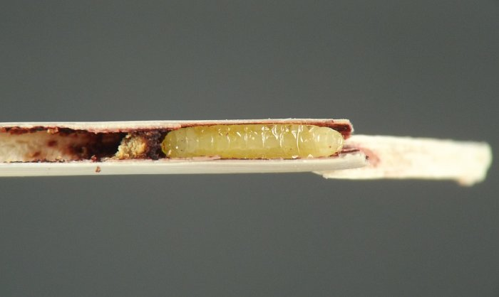
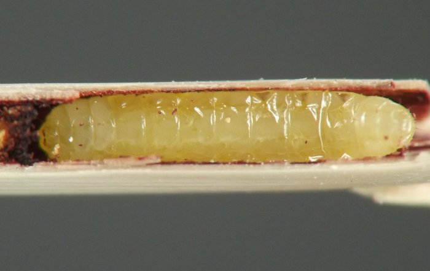
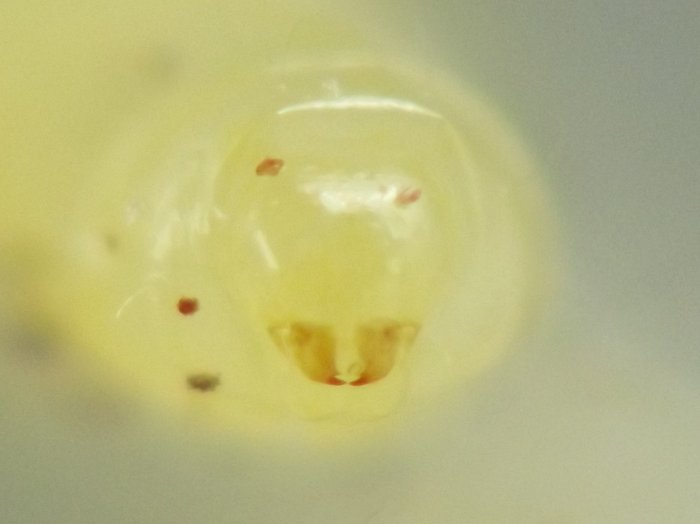
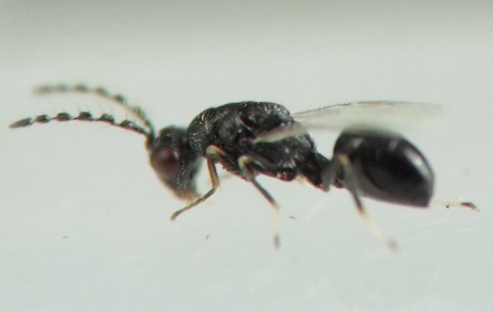
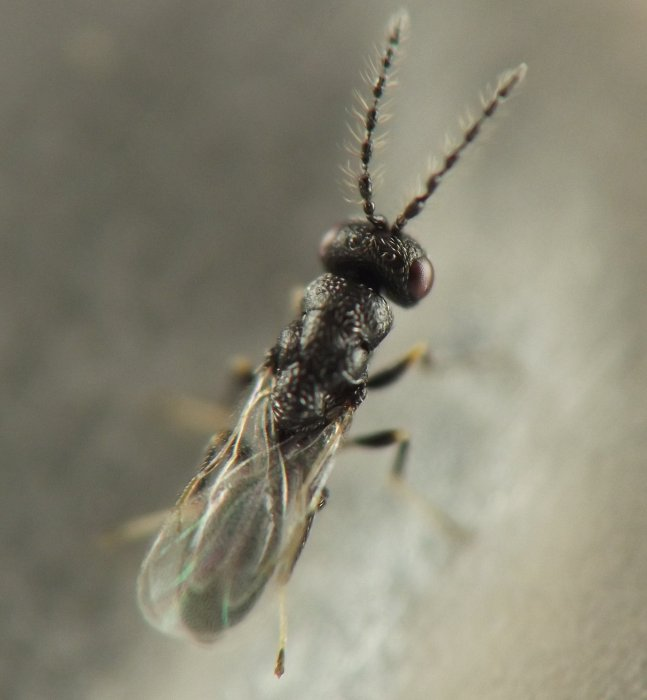

Local feeder (Hymenoptera) in stems of Bouteloua
| Record no.: | 0107 |
|---|---|
| Feeding guild: | Local feeder in stem |
| Taxonomy: | Hymenoptera: ?Eurytomidae: cf. Tetramesa sp. |
| Stages observed: | trace, larva, adult |
| Distribution observed: | IA |
| Hosts in Bouteloua: | B. curtipendula (sideoats grama) |
Senesced culms of the host grass in a remnant prairie in the study area hosted overwintering larvae of this hymenopteran local feeder in winter 2021-2022. An adult emerged from inhabited culms in spring 2022. The adult has not yet been identified, but externally it resembles Eurytomidae. Eurytomids in the genus Tetramesa are well known as the "jointworms" that feed in culms of grasses in many parts of the world, sometimes causing economic damage to cereals (Carr et al. 2020, Noyes 2004, Saghaei et al. 2018). A larva I photographed was located immediately adjacent to a node, which "joint" is a typical location for jointworms in culms. There was some limited dark discoloration to the culm interior in the vicinity of the larva.
Burks (1979) does not list any records of Tetramesa species using Bouteloua as a host, and I have been unable to find prior records elsewhere as well.

 Prev
Prev
{kind=link}
{kind=link}
{kind=link}

{kind=link}

{kind=link}

{kind=link}

Coll. 01/19/22, photos same day (larva, 01-03); coll. 01/19/22, adult em. 04/28/22, photos of adult on 04/29/22 (04-05).
- Burks, B.D. 1979. Eurytomidae. In Krombein, K.V., Hurd, Jr., P.D., Smith, D.R., and B.D. Burks (eds.). 1979. Catalog of Hymenoptera in America north of Mexico, vol. 1. Smithsonian Institution Press: Washington, D.C.[return to in-text citation]
- Carr, J.F., Eiseman, C.S., and V. Belov. 2020. Genus Tetramesa. Genus information page on BugGuide.net. Retrieved November 12, 2023 from https://bugguide.net/node/view/511692.[return to in-text citation]
- Noyes, J.S. 2004. Notes on families: Eurytomidae. In Universal Chalcidoidea Database. World Wide Web electronic publication. Retrieved November 12, 2023 from https://www.nhm.ac.uk/our-science/data/chalcidoids/eurytomidae.html.[return to in-text citation]
- Saghaei, N., Fallahzadeh, M., and H. Lotfalizadeh. 2018. Annotated catalog of Eurytomidae (Hymenoptera: Chalcidoidea) from Iran. Trans. Amer. Ent. Soc. 144:263-293.[return to in-text citation]
Page created: November 12, 2023. Last update: February 8, 2026